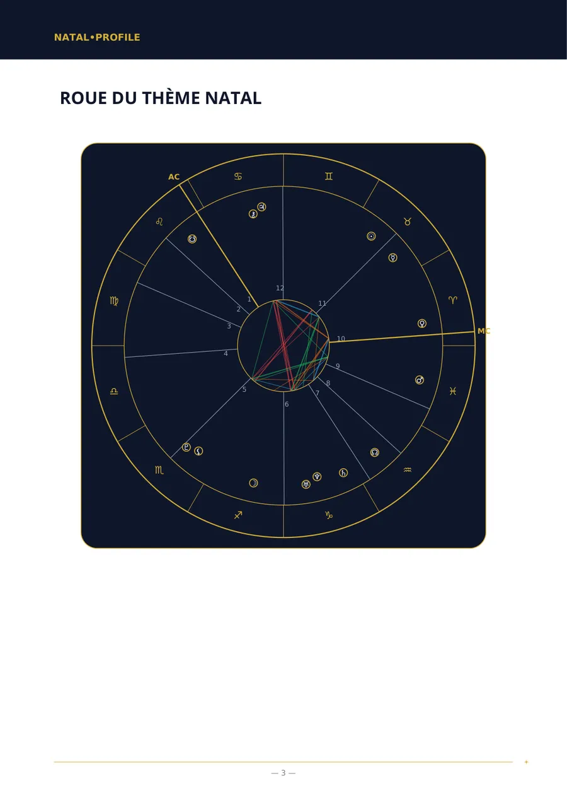
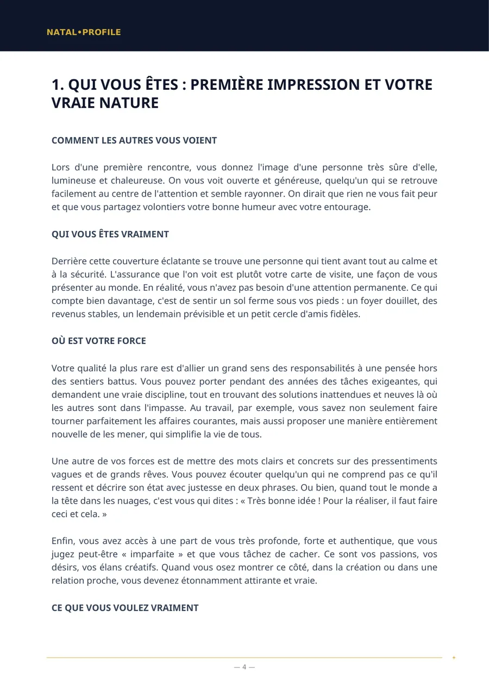
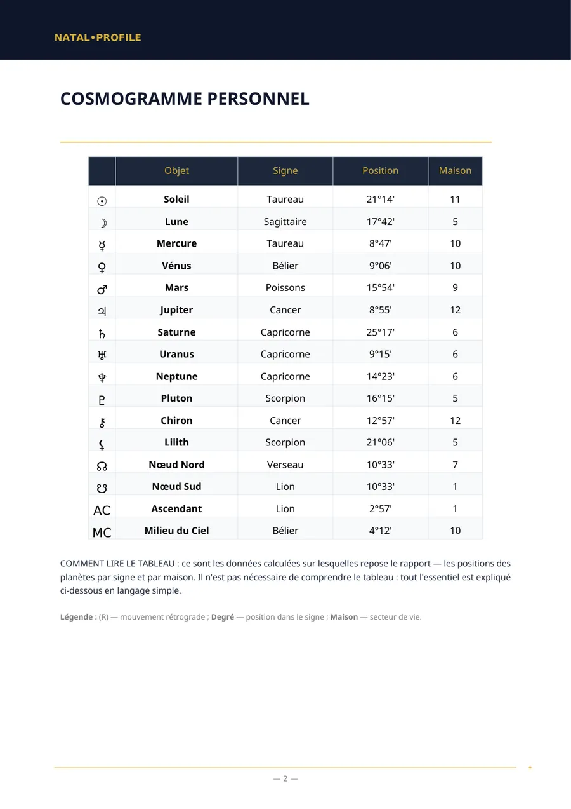
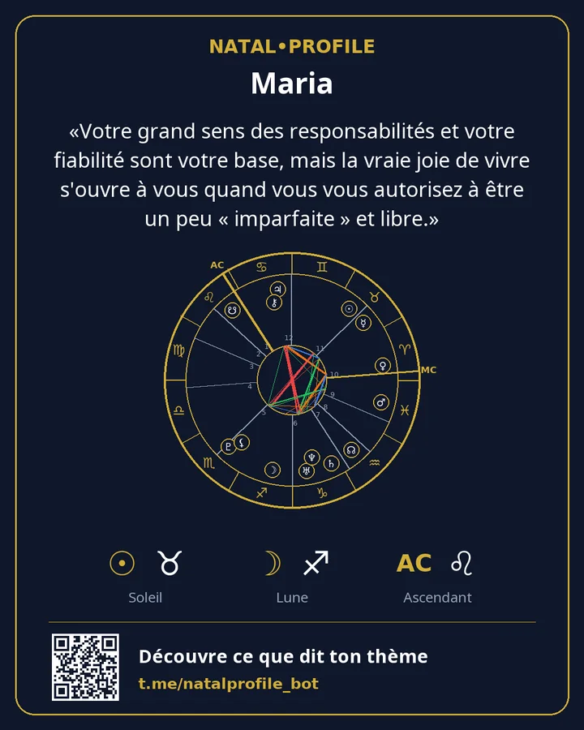

🌙 Thème Natal (Analyse de Base)
Une analyse de ton caractère quand l'heure de naissance est inconnue.
- 150 ⭐ Telegram Stars
- 6 chapitres
Ce qu'il contient
- Sentiments : ce qui vous apporte de la joie et ce qui vous déstabilise
- L'esprit : comment vous pensez et prenez vos décisions
- L'action : comment vous agissez
- L'amour : comment vous aimez et ce qui compte pour vous
- Votre force et ce qui vous empêche de l'utiliser
- Le corps et l'énergie
À qui il s'adresse
- Tu ne connais pas ton heure de naissance et ne peux pas la retrouver.
- Tu veux comprendre tes émotions et ta façon de penser et d'agir.
- Tu acceptes que les domaines de vie (maisons) ne fassent pas partie de cette analyse.
Ce que tu saisis
Prénom, genre, date et ville de naissance.
Pages d'exemple
De vraies pages du rapport « Thème natal ». C'est un exemple : les données de naissance sont fictives.




Autres rapports
Thème Natal (Analyse Complète)
Une analyse complète de ton caractère à partir de la date, de l'heure et du lieu de naissance.
250 ⭐9 chapitres · Détails →
Analyse de Compatibilité (Complète)
Deux personnes : ce qui vous a rapprochés, vos désaccords et ce que vous vous apportez.
250 ⭐6 chapitres · Détails →
Analyse de Compatibilité (Base)
Compatibilité des caractères quand l'heure de naissance est inconnue.
150 ⭐5 chapitres · Détails →
Analyse Carrière et Finances
Tes atouts au travail, les activités qui te conviennent et ta façon de gérer l'argent.
200 ⭐7 chapitres · Détails →